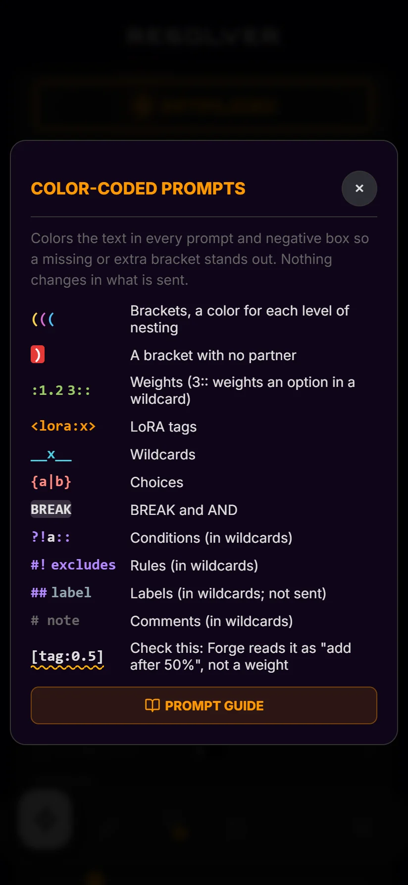
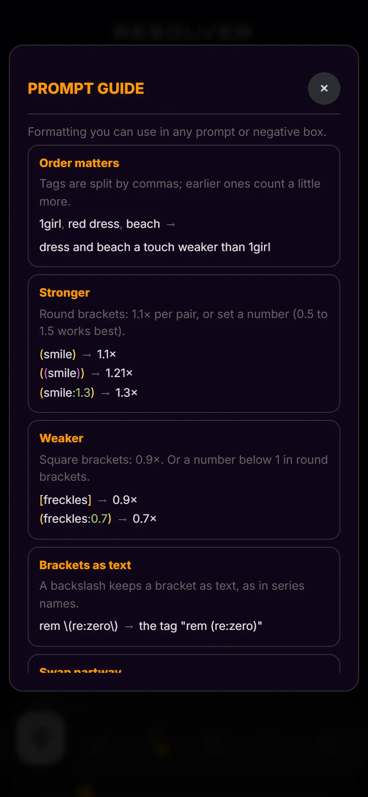
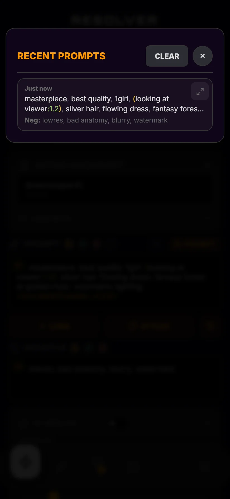

Docs / Create
Prompting
How to write what you want: weights, brackets, BREAK and AND, and the tools around the prompt box that color it, tidy it and remember it.
Try it: a prompt box like the app’s
Type below, or tap an example. The colors are made by the app’s own code, so they match your phone exactly. Under it is the weight each tag ends up with.
What each tag weighs
Weights multiply: each ( ) pair is ×1.1, each [ ] pair divides by 1.1 (about ×0.91), and (tag:1.3) sets the number. 0.5 to 1.5 works best.
Prompt syntax
The same list as the app’s Prompt Guide (the ? on each prompt box). It works in every prompt and negative box.
| What | Write | Gives |
|---|---|---|
| Order matters Tags split by commas; earlier ones count a little more. | dress and beach a touch weaker than 1girl | |
| Stronger | 1.1× · 1.21× · 1.3× | |
| Weaker | about 0.9× · 0.7× | |
| Brackets as text A backslash, as in series names. | the tag “rem (re:zero)” | |
| Swap partway Below 1: a share of the steps; 1 or more: a step number. | cat for the first half, then dog · dog after step 10 | |
| Add or remove later Not a weight! | a hat added halfway · the hat taken away after step 12 | |
| Alternate | swaps every step: a cat-dog mix | |
| BREAK A new chunk of the prompt. | colors stay on their own items | |
| AND Separate prompts blended. Slower; SD 1.5 / SDXL only. | less mixing; more cat than dog | |
| LoRA Two character LoRAs: about 0.6 each. | that LoRA at 0.8. More | |
| Wildcards and choices | one option for each image. Wildcards | |
| In the negative | no hat, sun hat or top hat. Below |
[tag:0.5] is not a weightIt looks like one, but Forge reads it as “add this tag after 50% of the steps”. For a weaker tag write (tag:0.5). The app underlines it with a yellow wave so you notice.
Flux, Krea and Qwen (Z-Image) understand full sentences, so describe the picture in plain words there. Weights and tags matter most on SDXL and Anima.
The colored prompt boxes
With Config → Prompts → Color-coded prompts on (the default), every prompt and negative box is drawn in colors, so a missing bracket stands out. Nothing you send changes. Tap the ? beside the switch for this legend:
- Brackets: a color for each level of nesting.
- A bracket with no partner: white on red.
- Weights (and
3::in a wildcard).
- LoRA tags.
- Wildcards and choices.
- BREAK and AND, highlighted.
- Check this one: a timing, not a weight.
- In wildcards
- Conditions
?!a::, rules#!, labels##and# noteshave their own colors too.

The Prompt Guide
The ? on each tab’s Prompt box opens the Prompt Guide: everything in the table above, with colored examples. It works offline, so it’s there when you need a reminder.
For wildcard syntax there’s a second guide, How To, in the Wildcards window. See Wildcards.

Recent Prompts
The clock under the prompt opens Recent Prompts: the last 20 prompts of that tab, saved each time you generate or queue (Inpaint and img2img share one list).
- Each shows when (“12 min ago”, “Yesterday”), the checkpoint, and the prompt in colors.
- Tap one to see it in full, with Forge Couple regions if it had them. COPY copies it; USE puts it back in the tab.
- CLEAR empties the list. Turn it off in Config → Prompts → Prompt history.
History has its own search too, by prompt, checkpoint and date. See History.

The negative box
The Negative box lists what you don’t want. Resolver adds two helpers when the job is sent (your box itself isn’t changed):
- Negative blocks prompt tagsConfig → Prompts · on
- A tag that is in the negative is taken out of the prompt, so the two never fight. Wildcards also avoid picking it.
- always
- Removes every prompt tag that ends in that word, and keeps wildcards from picking one:
~hatstops hat, sun hat and top hat. Handy against a wildcard or LoRA that keeps adding something.
A __wildcard__ written in the negative is kept out of the prompt’s picks and adds nothing to the negative.
Prompt auto-formatting
Off by default. With Config → Prompts → Prompt auto-formatting on, each box is tidied when you generate (and when you leave it, with Format on leaving text box):
Before
After (SDXL)
- One space after each comma, none before; no doubled or empty tags; empty brackets go;
(blue eyes : 1.2)becomes(blue eyes:1.2); broken weights like(smile1.5)are mended. - SDXL and Anima (and Inpaint with their checkpoints): tags in lower case,
_between letters becomes a space, duplicate tags are removed, a closing,is added, andname (series)brackets are escaped so Forge reads them as text. Pony’sscore_9, emoticons like^_^, LoRA tags, wildcards and embedding names are left alone. - Flux, Qwen, Krea (sentences): spacing only, plus a missing space after a full stop.
- Unfinished wildcards are closed (
__pose→__pose__) and unknown ones removed, with a message.
Character Select (SAAC)
For WAI-Illustrious models (v16 and later): a searchable gallery of the characters the model knows, with pictures. Switch it on in Config → Prompts → SAAC. The first time, it downloads about 125 MB of character data, kept on the phone after that.
- A SAAC button appears under the prompt. Tap a character to add its tags to the prompt (formatted as the box would be); characters already in the prompt come first.
- Search, ★ favorites, and sort (A–Z, Recently used, Most used). Hold a card to see its picture full screen.
- in a prompt picks a character for each image (only your favorites while the ★ filter is on).